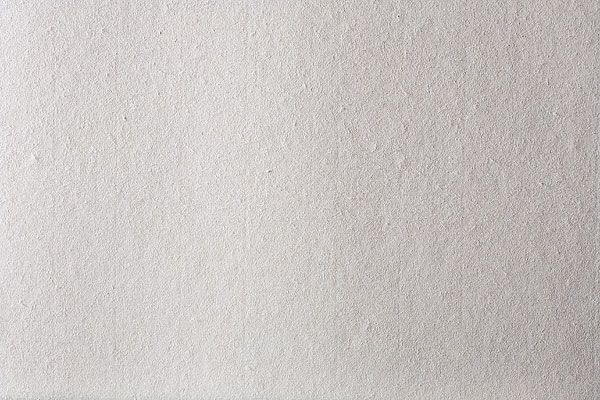

<ion-header>
  <ion-navbar>
    <ion-title>首页</ion-title>
  </ion-navbar>
</ion-header>

<ion-content class="card-background-page">
  <ion-card (click)="toArticleListPage()">
    
    <div class="card-title">文章</div>
    <div class="card-subtitle">article</div>
  </ion-card>

  <ion-card (click)="toStoryListPage()">
    
    <div class="card-title">故事</div>
    <div class="card-subtitle">story</div>
  </ion-card>
</ion-content>
